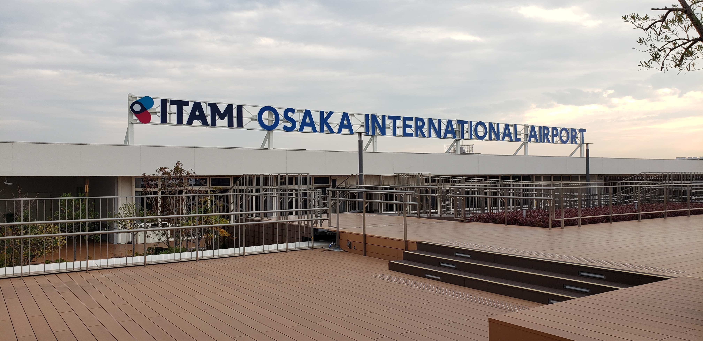

Transportation - Airplane

Flying to Tokyo
Major airports for international visitors to arrive at in Tokyo include Haneda (HND) and Narita (NRT) Airport.
Located within 30 minutes by car to the center of Tokyo, Haneda Airport receives flights from over 30 airlines,
has over 150 restaurants and cafés, and more than 170 shops available. There are also observation decks, nurseries,
clinics, hotels, and other additional amenities for tourists as well.
When leaving Haneda Airport, options for reaching your destination include car rental, monorail, buses, and others including
a water taxi. If taking the train, travelers can expect to take the Keikyu Line. The monorail arrives at Hamamatsucho Stain.
Both the train and monorail make stops within the airport at each terminal.
If needed, there is an airport shuttle that can be used for travel between Haneda and Narita Airport for around 3,000 yen.
In addition, they can be reached via the train using the Keikyu, Toei, or Keisei Line.
Narita Airport, located around 1 hour away from Tokyo's center via car, contains over 83 shops and restaurants and offers
a capsule hotel, lounges, nap rooms salons, and other additional services. Aside from the 80+ airlines that bring passengers
to Tokyo, travel to and from the airport is available by taxi, bus, and train. There is also a shuttle bus available for
travel between its three terminals.
Flying to Osaka

Osaka International Airport (ITM) and Kansai International Airport (KIX) are the two major airports
located in the Kansai area of Japan.
Osaka International Airport (also referred to as Itami Airport) is the smaller of the two, although it offers
plenty of amenities including a hotel, restaurants, shops, and even a Pokémon Center. There is also an observation deck
available where aerial photography enthusiasts can enjoy watching the planes take off throughout the day.
Travelers can expect to
reach the city center of Osaka via car within 20 minutes. If preferred, it is also accessible via monorail or
the airport limousine bus. It is important to keep in mind that although Itami Airport is international, it only has flights
available for airlines based in Japan, such as Japan Airlines (JAL) and All Nippon Airways (ANA).
Kansai International Airport is partnered with over 70 airlines for international flights and is located in Osaka Bay.
Visitors are provided a range of restaurants and cafés to dine at, such as Italian, Chinese, and of course, Japanese cuisine.
The airport also offers both a dental and a medical clinic, 90 shops, an observation deck, pet hotel, and lounges.
Kansai
International can be reached via train, bus, taxi, and other modes of transportation. Available train lines include Nankai
and the JR (Japan Railways) line.